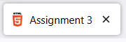

| Tag | Definition | Examples |
|---|---|---|
| <!DOCTYPE html> | This tag informs the browser that the document is written in HTML. |
N/A |
| <html lang="en"> | This tag informs the browser that the document is by default English, which is helpful for programs like Google Translate. |
N/A |
| <meta charset="UTF-8"> | This tag allows the browser to display things outside of the basic ASCII characters, such as emojis. |
N/A |
| <meta http-equiv="refresh" content="0; url=$URL"> | This tag can refresh the page after a certain amount of time. |
N/A |
| <title> | This tag gives the webpage a name in the tab at the top of the screen. |
 |
| <style> | The style tag allows you to do CSS code within your .html file. | Using <style>td.internal-css {background-color: black;color: white;}<style> we can give this box specifically a black background. |
| <link> | Using the link tag, we can link .html files to .css files, allowing us to do CSS code in a seperate file. |
This page and the inside page of this website share a common CSS file. |
| <link rel="icon"> | In addition to linking CSS with the link tag, we can give our website a favicon (little icon to the left of the title in the page's tag). |